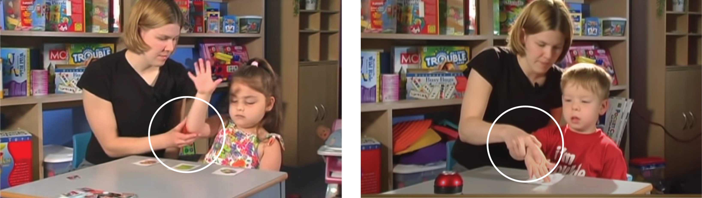
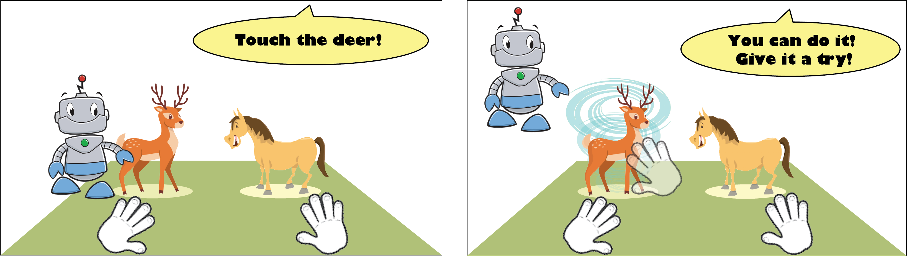

TRAILER
PROCESS
The process of the design and development for this VR application is quite different from projects in other platforms. There are some reasons resulting in the numerous iterations among Ideation & Design, Prototype & Implementation and Expert Review:
-
no tools can really prototype a VR experience, except Unity 3D
-
lack of related works as precedents
RESEARCH
I visited the Intensive Behavioral Intervention Services (IBIS) clinic at the University of Miami at the beginning of the project. By immersing myself in the context and closely observing the various trainings for children with ASD, I got a vivid impression of how the training was done in reality. Then I met with the director of IBIS clinic, Dr. Anibal Gutierrez, to learn some background knowledge about ASD and the research he proposed.


During the meeting, Dr. Gutierrez suggested me to simulate Discrete Trial Training (DTT). Discrete trial training (DTT) is a structured **Applied Behavior Analysis** (ABA) technique that was one of the first interventions developed for autism and had extensive research supporting it. A trial of DT training has three basic components: Antecedent, Behavior, and Consequence. Normally, Antecedent is the questions from instructors. Behavior is the response from students with ASD to the Antecedent. Consequence is the feedback of the behavior from instructors.
Essentially, in this kind of training, the users’ task is to choose the right model as the instructor providing the verbal name of that object. Normally, the instructor would ask questions like “which one is …“or “touch the …“.
The diagram beneath shows the basic structure of this type of training.
INTERACTION DESIGN
Prompts are the “cues” from the instructors that help students with ASD find the right answer. It happens between Antecedent and Behavior. In the real training context, when students hesitate or don’t respond to the Antecedent (question), normally instructors would provide prompts like repeating the question or holding one hand of the student and putting it on the target object.
How to translate different "prompts" to VR experience?
1.1 Prompts in the live training
1.2 Prompts in the first iteration (storyboard)
1.3 Prompts in the final prototype


1.4 The distribution of prompts along the timeline

DEMO: Different prompts in a trial
2. How to enable users to select objects in VR?
The most important interaction of this VR system is selecting the object in front of users. In the stage of Technical Research, I tried three approaches shown as beneath. And finally chose “using a virtual pointer with controller” due to two reasons:
-
using controller would enable more accurate tracking of users’ movements
-
using a virtual pointer would allow users to interact with full-size objects at a certain distance
2.1 Technical research of "selecting" behaviors in VR


2.2 Different "selecting" behaviors in the final prototype
In the scope of the detailed VR experience, selecting behaviors are separated by three types of interactive objects, allowing users to be more aware of the difference between these objects. To differentiate different selecting behaviors, I mainly used different auditory feedbacks for hovering and triggering (behaviors of virtual pointer) to do the separation.


DEMO: Select different objects
3. How to translate different "rewards" to VR experience?
The “feedback” here refers to instructors’ response after students with ASD choose the answer. If the answer were wrong, the instructor would simply tell the student it isn’t the right answer and clean the field, then prepare for the next trial. If the answer were correct, instructors would reward them with verbal praise or toys, like a toy car, bubbles, a short clip of cartoon, or physical interactions like giving a high five or a swing, tickling, hugging.
3.1 Rewards in the live training


3.2 Rewards in the first iteration (storyboard)

3.3 Rewards in the final prototype

DEMO: The Reward for the Right Answer
DEMO: a complete session
Spatial Layout

Field Of View (FOV)
The field of view (FOV) is the angular measure of what can be seen at a single point in time. Normally, the FOV of a VR headset like Oculus Quest would be less than that of a person with naked eyes. In this project, users need to stand or sit stationarily to choose the correct answer from the models in front of them. Therefore, besides other interactive objects like buttons on the navigation panel, arrange all the models within the horizontal and vertical FOV of the VR headset is crucial for the performance of the users and the result of the research it assisting.
The horizontal and vertical FOV of Oculus Quest varies in different reports, blogs, or posts online. Therefore, I decided to measure them by meself using a matrix of cubes in Unity. With an Interpupillary Distance (IPD) of 62, the user’s horizontal FOV is 102°, and the vertical FOV is 100°.

For this project, the implementation was a part of “ideation & Design.” Only by implementing features in Unity 3d with all the logic of training and effects can the design and development move forwards.
The detailed process of implementation is well recorded in my design journal.
Preparation
In fall 2020, Dr. Anibal Gutierrez from the Department of Psychology, University of Miami, proposed a new study in the context of Covid-19. The study’s goal is to evaluate the VR system with non-ASD subjects to refine the procedures first, which would act as the preparation for the evaluation with individuals with ASD afterward.
To realize the new study’s goal, Dr. Gutierrez provided the new training structure and suggested replacing the current animal models with something non-ASD subjects didn’t already know. For example, they can be Japanese or Chinese characters.
The task structure is shown as beneath:

Final Testing
The final testing would be conducted in the Department of Psychology, University of Miami, in Spring 2021.
DEMO: New study
This project gives me a great opportunity to create a VR application from scratch: from research to ideation, to design, to prototype, to implementation, and justify design decisions through numerous iterations with professionals in both fields of design and psychology.
In this project, I explored a lot of 3d effects I learned from other media, like movies and anime. For me, as a designer for 3d real context before, the amazing effects a VR system can present are mind-blowing. And the professionals in design and psychology were all very optimistic and exciting about the project.
Limitation & Concerns
-
Customization: currently, the project can’t enable in-app customization. Even though I’d arranged the settings in Unity 3d to allow a person to do the customization almost without any experience of Unity 3d, it would be an obstacle for the future research without a unity developer.
-
Auto recording system: one advantage of a Virtual Reality system is that it can record various data from users during use. This feature would significantly reduce the workload of instructors in clinics or classrooms. Currently, the application can only record the scores when users pass a level.
-
Target Users: Oculus Quest, together with other VR headsets, all have a similar age limit for users. For Oculus Quest, it is 13+. Even though there might be VR headsets designed for younger children in the future, at this point, the target users chosen for the testing for this project should at least be 13 years old.
-
Lack of design guidelines: when I started the project’s design process, I couldn’t find any design guidelines about creating VR applications for individuals with ASD. All the design decisions I made were based on training in the real context, my own design experience, and suggestions from psychologists and designers. Before the final evaluation of the application, it remains unknown whether these designs are good practice for the target users.
Next Step
-
Study the results of the testing in the Department of Psychology.
-
Design and conduct testing from HCI researchers’ perspective to extract design insights about designing the VR system for individuals with ASD.
-
Explore other increasing mature VR features, like hand tracking, voice command, eye tracking, etc.
-
Explore the use of VR for different types of training for individuals with ASD, like training for communication skills.